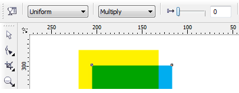

Изготавление многоцветного трафарета, помогите
artclon / 03.06.2010, 23:43/00:41
Форум:
Добрый день!
Хочу сделать многоцветрый трафарет. Но не могу решить первую задачу - автоматически уменьшить количество цветов в рисунке. Хочу изготовить 4-ех цветный трафарет из полноцветной фотографии. (т.е. преобразовать n-ое количество цветов в 4 цвета). Помогите...
нет не просто..мы этот вопрос с вами обсуждали в другой теме , нужно растрирование по каждому цвету и каждый цвет в определенной процентовке..
biswom, как я понял, вам нужно изображения подготовить для шелкографии.
1. Рострирование не нужно, это вам не офсетная печать.
2. Понятие "процентовка цвета" в растрировании, в первые слышу.
3. Для шелкографии, изображение подготавливается в ручную. Если бы вы показали, то что вам нужно, то тогда можно было объяснить, как его следует подготовить.
в том то и дело что могу показать только скан готового пакета..насколько мне известно ,это делается для флексографии...и суть в том ,что берется растровое изображение,разбивается на несколько объектов ,но в 2- 3 цвета...и некоторые изображения имеют как бы "распыленность" то есть можно сказать просвечиваются..то есть процент заполненности я должна смочь корректировать...так например ,мы печатаем желтыи и синим цветом,а получаем еще и зеленый местами при наложении..ну вот как то так..знаете совмещение цветов...
biswom, тогда причем тут трафарет, вы в курсе что флексография это высокая печать?
Вы с технологом советовались?
Старайтесь не использовать термины которые не знаете.
То что вы хотите корректировать, процент заполненности, предполагаю, что это растискивание, будет зависеть от настройки соответствующего алгоритма растрирования (ромб или квадрат в полутонах, обратный круг в тенях)
Да и растискивание в пределах 30-35% для флексографской печати считается обычным.
biswom, вы видимо в ручную хотите собрать два канала растрового изображения на одну пленку фотовывода. Если да, то непонятно зачем, может в целях экономии?
Тему надо переименовать в "Угадай "мелодию"
biswom, растровый редактор вам в помощь
DynamiteBoy, вы правы именно так мне и нужно..а можете объяснить как вы это сделали? Правы все кто говорили,что мне нужно разбить на каналы...и собрать мне нужно не на одну пленку а в одном макете,чтобы было видно какое изображение в итоге получится...Смеятся с новичка всегда легко..но если я не знаю как это сделать..
Des425
Пожалуйста объясните КАК это сделать!
Это не я, а ваш технолог должен объяснять.
А то что вам нужно, могу объяснить без использования растрового редактора.
(один из способов)
1. напечатайте ваше изображение. Ctrl+P
2. В настройках General, возле Printer укажите Adobe PDF
3. В настройках Color, укажите Print separations
4. В настройках Separations, поставьте галочку на против Print separations in color
Откройте получившийся PDF в Корле. (Каждый канал будет на отдельной строници)
наложите один конал на другой в режиме прозрачности.
Настройки: 
biswom, да и объясните зачем вам это надо, объясните цель,
экономия или попытка напечатать c RGB красками?
Страницы